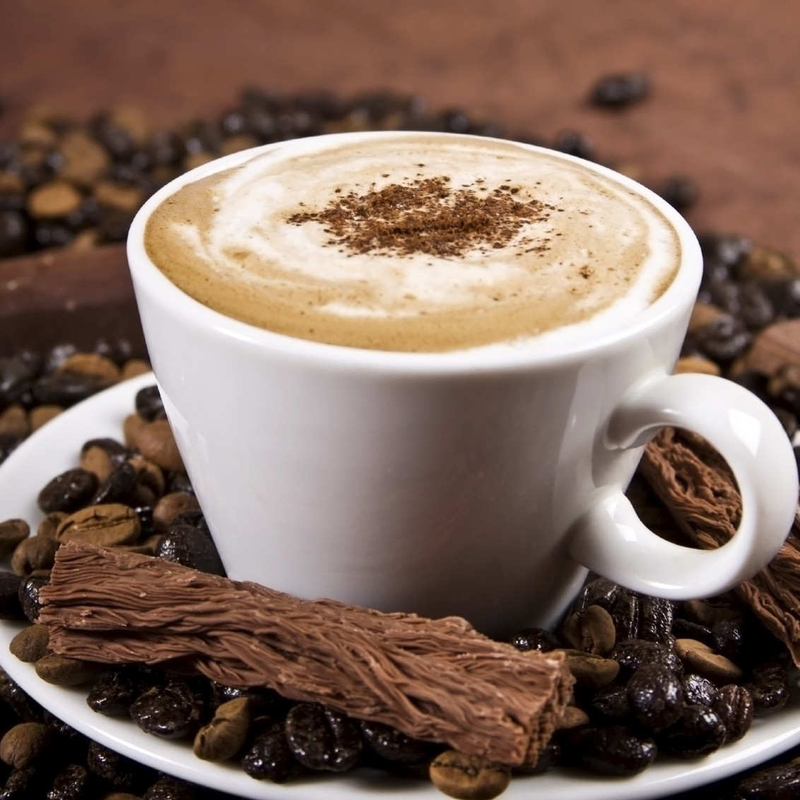
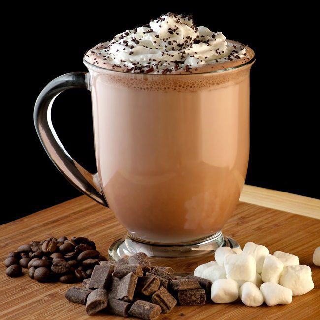

1. Mocha là gì?
Mocha (đọc là mo-ka), tiếng Ý còn gọi là Mocaccino, là một trong những
sản phẩm café Ý điển hình, gần giống như café Latte nhưng có thêm
sauce chocolate. Vị đắng ngọt ngào của chocolate hòa quyện với vị đắng
của café và béo ngậy hơn nhờ sữa tươi đánh nóng cùng lớp bọt sữa mịn
màng, đã khiến cho Mocha trở thành thức uống ưa thích của phụ nữ và
giới trẻ.
Vì Mocha sử dụng café espresso, nên để pha được tất nhiên bạn cần có
một
máy pha café. Nếu không kinh doanh quán thì bạn không cần đầu tư loại máy to đắt
tiền, một chiếc máy pha nhỏ xinh xinh là có thể dùng được rồi.
Máy móc, dụng cụ cần chuẩn bị:
- Máy pha café (có vòi sục sữa)
- Máy xay cafe (nếu bạn dùng cafe hạt thì phải có máy xay cafe. Để cafe giữ được hương vị ngon nhất thì khi nào pha mới xay cafe)
- Ca đánh sữa (với đồ nóng)
- Bình shaker (bình lắc – dùng cho đồ lạnh)
- Zic đong (ca đong ml)
2. Cách làm Mocha nóng

Công thức
- Café espresso: 25-30ml
- Sữa tươi thanh trùng: 180ml
- Sauce Chocolate: 15ml
- Bột Cacao
Cách làm
- Làm nóng cốc sứ bằng cách cho nước sôi vào lòng cốc, để 1 lúc rồi đổ đi, lau khô cốc.
- Rót 15ml sauce chocolate vào đáy cốc.
- Lấy sữa vào ca đánh sữa
- Chiết xuất 1 shot espresso single (chảy thẳng vào trong cốc).
- Trong thời gian café chảy, đánh nóng sữa tươi tạo bọt mỏng như bọt latte
- Xử lý bọt sữa
- Rắc bột cacao phủ đều khắp bề mặt lớp creama của café
- Đổ sữa từ từ vào café, tạo art tùy thích.
Thế là bạn đã có một cốc Mocha ngon tuyệt rồi. Khi uống bạn khuấy đều để lớp sauce chocolate hòa quyện với café và sữa, thưởng thức cùng bánh cookie nhé!
3. Cách làm Mocha đá

Công thức
- Café espresso: 50 – 60ml
- Sữa tươi không đường: 80ml
- Sauce Chocolate: 10ml
- Đường nước: 10ml
- Đá viên
Cách làm
- Đong sữa, sauce chocolate, đường vào bình shake
- Chiết xuất 1 shot espresso double
- Đổ café vào trong bình shake, thêm đầy đá, đóng nắp lại và lắc đều
- Rót ra cốc, rắc chút bột cacao lên lớp bọt để cho bắt mắt.
- Bạn có thể thêm 1 lớp kem lên trên để tăng độ hấp dẫn cho đồ uống
Thế là bạn đã có một cốc Mocha ngon tuyệt rồi. Khi uống bạn khuấy đều để lớp sauce chocolate hòa quyện với café và sữa, thưởng thức cùng bánh cookie nhé!